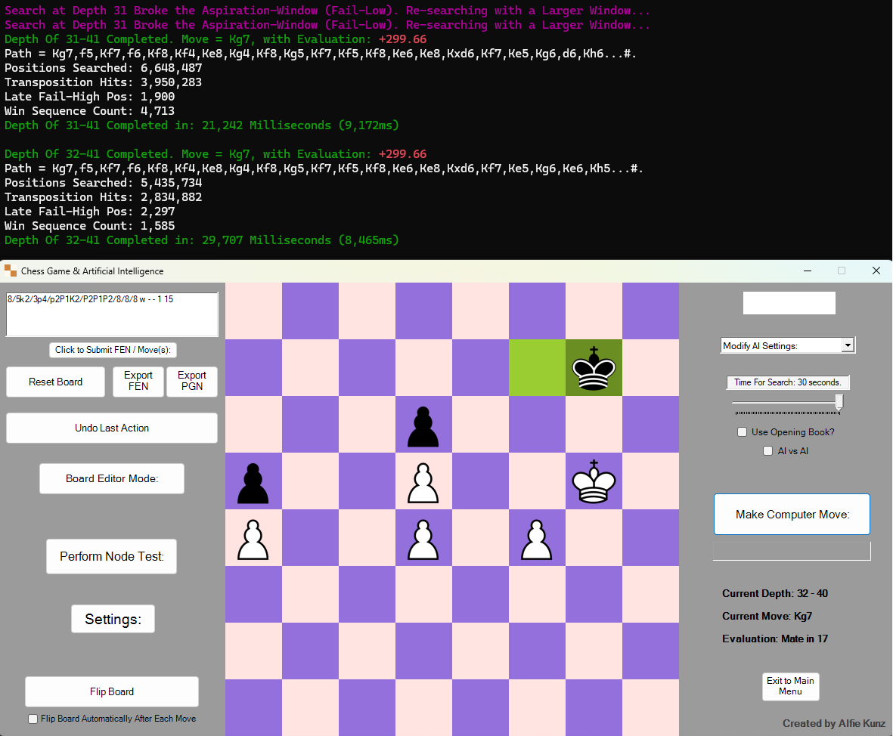
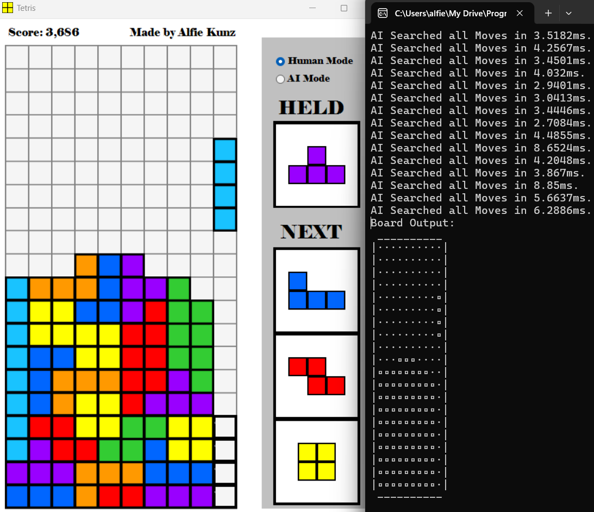
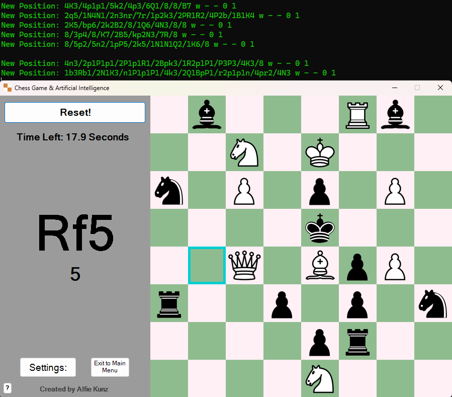
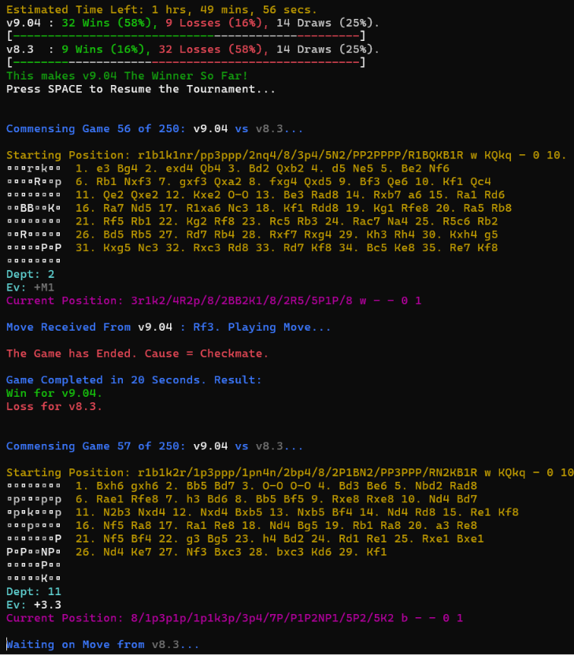
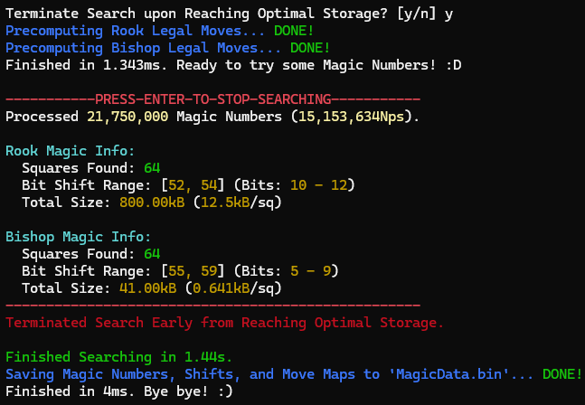
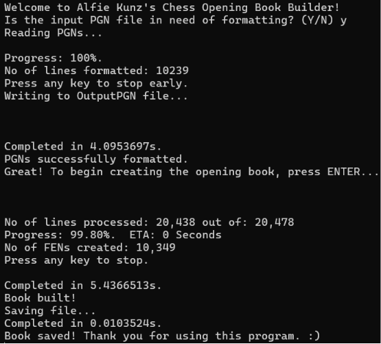
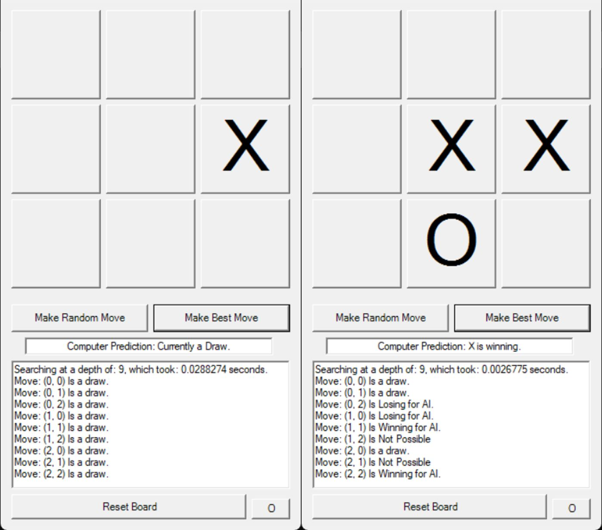
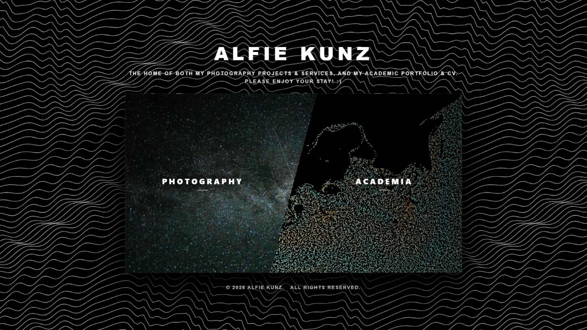

Projects
APIC Computational Fluid Dynamics Research Project
Self-directed original cutting-edge CFD research, independently deriving and implementing a real-time Eulerian-Lagrangian APIC system in novel scenarios to investigate high-performance, momentum-conserving vortices.
Authored a rigorous, well-referenced technical essay on my contributions to the field, and demonstrated strong scientific communication by presenting my findings to specialists.

Chess Artificial Intelligence & Interface
Architected a commercial-quality Chess AI project, boasting an Elo of ~2850 (v10.0), built around a sophisticated chess-playing interface.
Robustly engineered and optimised a custom NegaMax heuristic AI algorithm, using a multitude of cutting-edge optimisation techniques.
Awarded 100% on the initial A-Level CS NEA; recognised by the project supervisor as the 'best he had seen' in his years of teaching.

Emergence from Evolving Slime Trails
Conducted biophysical research on the emergence of organic behaviours, and their physical evolution into distinct physarum transport networks.
Simulated millions of atomic agents in real-time on the GPU (HLSL compute shader, in the Unity Game Engine), which behave under a 'Patlak-Keller-Segel'-type coupled system.

Digit & Doodle Recognising Neural Network
Designed a NN algorithm to recognise hand-drawn digits / doodles, from the MNIST Digit and Google 'Quick Draw' databases, employing high-level Machine Learning concepts such as back propagation, regularisation, and overfitting prevention.
Achieves ~98% accuracy on the MNIST dataset, and ~92% on the Google 'Quick Draw' database (12 categories) within 2 minutes of training.

Tetris Game & Artificial Intelligence
Architected a fully fledged Tetris game environment, built around a colourful interface with live pieces, hold mechanics, and piece placement previews.
Engineered a hand-tuned, heuristic-based BFS Artificial Intelligence from scratch, that traverses every legal placement (even fancy T-spins!) on a novel, efficient board state structure.

Chess Secondary Projects




Risk Battle Odds Calculator
Engineered a Monte Carlo simulator for the board game RISK, computing a full battle-odds matrix across every combination of attacking and defending troop counts.
Achieves ~300 million dice rolls per second, optimised via parallel processing, visualised live through a self-refining, colour-graded console heat-map.

TicTacToe Artificial Intelligence
Solved the game of TicTacToe using the MiniMax algorithm, applying alpha-beta pruning to exhaustively search the entire game tree (guaranteeing optimal play) in under 15ms.
Developed as an introduction and learning tool into deterministic AIs, by providing clean, simple-to-understand code.

Photography and Academic Web-based Portfolio
Overhauled and re-engineered a baseline template into a bespoke academic and photography portfolio, which serves as a home for both photography advertisement and career building.
Developed custom JavaScript modules for dynamic JSON gallery rendering and hosting, AES-256 encrypted client-side delivery, custom non-linear phase modulation background, and integration with GitHub repositories.
